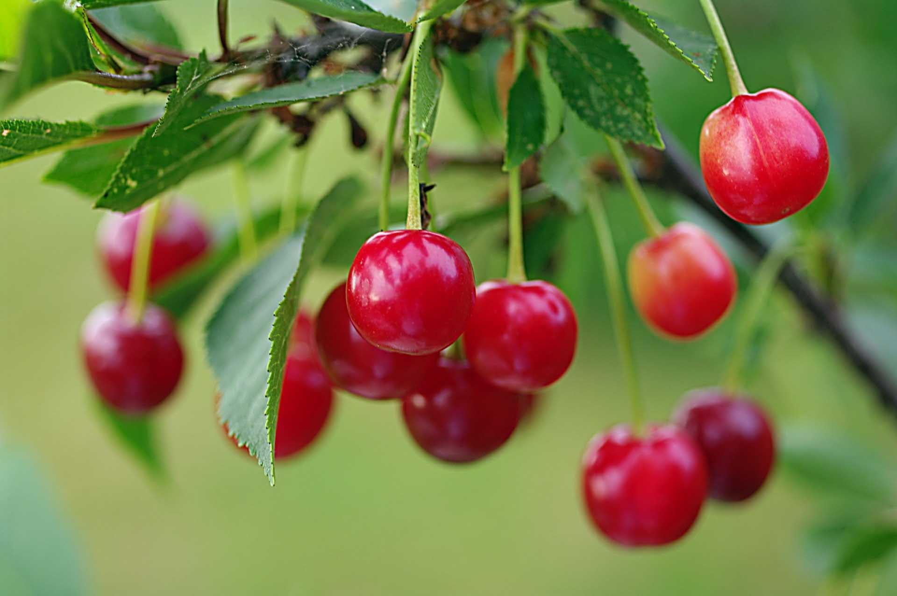
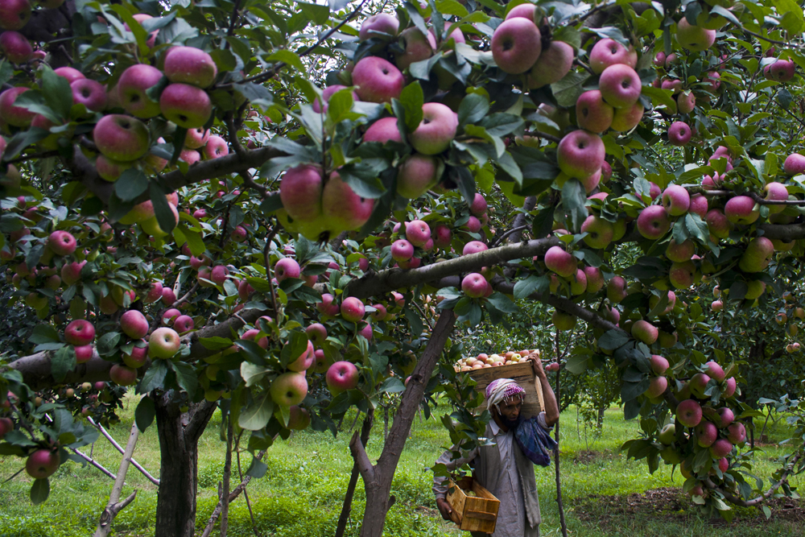
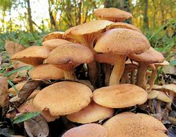

Fruits Product in Jammu and Kashmir..
  
Shopian Apples : -Apple cultivation in India is dominated by Kashmir, which produces 78 per cent of India's total annual output of around 25-26 lakh metric tonnes.A special mention needs to be made of Ambri, the well-known native apple from Shopian It is rated as the best apple of Kashmir in terms of fragrance, taste and longevity
Cherries (buramulla) : - Kashmir produces four highly sought-after varieties of cherry — double, makhmali, mishri and Italy — most of which are sold outside the Valley, for premium prices. With harvest underway, cherry growers are trying to send the fruit to other states at the earliest.
Mashroom : Kashmiri mushrooms, also known as "Gucchi" or "Morel mushrooms," are a rare and highly prized delicacy in Indian cuisine. These mushrooms are found in the Himalayan region, particularly in the forests of Kashmir. They have a distinct and earthy flavor, with a nutty undertone, making them a favorite in various dishes like biryani and curry.
Some Product In Jammu and Kashmir


Honey : Highest spatial honey production was found in Pulwama followed by Anantnag, Baramulla, Srinagar, and Kupwara. Around 70,000 honey bee colonies have come up in different regions of Kashmir valley.
Walnut : Walnut accounts for 85.05% of the land under dry fruit cultivation in Jammu and Kashmir. According to official estimates, around 2.66 lakh metric tonnes of walnuts are harvested from an area of 89000 hectares, while the productivity of walnuts in J&K is 2.98 tonnes/ha . Walnuts are export commodities and bring in around 120 crore rupees per annum.
Lavender : Large-scale lavender production in Jammu and Kashmir is limited by climatic requirements (low humidity and low winter temperatures), poorly drained soils and the scale requirements for essential oils processing. Lavender could be suited as a specialty/niche crop for farmers especially those with ongoing agritourism enterprises.
Spices in jammu kashmir

Red Chilli : Kashmiri Red Chilies or Kashmiri Laal Mirch are characterized by their ability to give a dark red colour to food, capable of colouring and adding flavour, while at the same time not allowing the food to become too pungent or spicy.[1] India is the largest consumer and producer.[2] Numerous companies sell the powdered form, including MDH, Everest Spices, Sakthi Masala and Badshah Masala.[3] Vir Sanghvi writes that a majority of the restaurant
Spices : Known for producing high-quality spices, the region has become a hub for the industry, with thousands of local farmers and traders involved in its production and distribution. The most famous spices produced in the region include saffron, fennel, cumin, cinnamon, and cardamom, which are used both locally and internationally in a variety of dishes..
Garlic : Official figures reveal that in the year 2021-2022, a total of 1776.50 hectares in the Kashmir valley was under garlic production and the total garlic produced in the year was 553480 quintals- out of which 110696 quintals were exported outside the Jammu Kashmir region..